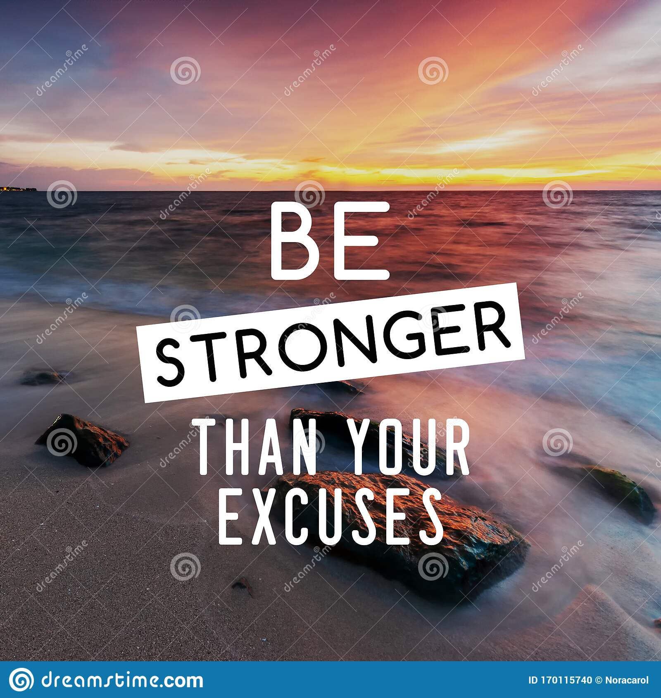

|  |
Inspirational quotes:-Inspirational quotes can help motivate us and create a positive outlook on life and work when we need it most.
They do so by harnessing the power of positive thinking. Reframing our brains to think positively is a key step in leading a happy and
successful life.
You make a choice when you decide how you will react to any given situation. If you’re choosing (sometimes subconsciously)
to complain and think negatively, your natural reaction will be to dwell on the negatives of every situation.
When you actively choose to think positively, regardless of how absolutely ridiculous it may seem, you will turn the situation
into a development plan for growth, helping you become a better problem-solver and leader. Over time and after reframing
your mind to think positively about problems, you’ll stay motivated, inspired, and empowered to take on any challenge
that comes your way!
While reading through this list of the best motivational quotes in English, I recommend writing down some of the best
inspirational and motivational quotes that resonate with you and your current situation. After writing them down, find the
most motivational thought or the most inspiring passage, read it out loud, and then really try to understand the meaning.
Inspirational Quotes For Your Personal Life
1.“People tell you the world looks a certain way. Parents tell you how to think. Schools tell you how to think. TV. Religion. And then at a certain point, if you’re lucky,
you realize you can make up your own mind. Nobody sets the rules but you. You can design your own life.”— Carrie Ann Moss
2.“Some women choose to follow men, and some choose to follow their dreams. If you’re wondering which way to go, remember that your career will never wake up
and tell you that it doesn’t love you anymore.” — Lady Gaga
3.“Life is what happens to us while we are making other plans.”― Allen Saunders
4.“Life isn’t about finding yourself. Life is about creating yourself.”― George Bernard Shaw
5.“You are the sum total of everything you’ve ever seen, heard, eaten, smelled, been told, forgot ― it’s all there. Everything influences each of us, and because of that
I try to make sure that my experiences are positive.” ― Maya Angelou
Inspirational Quotes For A Happy Life
1.“You are who you are meant to be. Dance as if no one’s watching. Love as if it’s all you know. Dream as if you’ll live forever. Live as if you’ll die today.” James Dean
2.“You do not find the happy life. You make it.”— Camilla Eyring Kimball
3.“You’ve gotta dance like there’s nobody watching, Love like you’ll never be hurt, Sing like there’s nobody listening, And live like it’s heaven on earth.”― William W. Purkey
4.“Happiness is not something readymade. It comes from your own actions.”-Dalai Lama
5.“Folks are usually about as happy as they make up their minds to be.” – Abraham Lincoln
Inspirational Quotes To Build Confidence
1.“Never bend your head. Always hold it high. Look the world straight in the eye.”– Helen Keller
2.“We generate fears while we sit. We overcome them by action. Fear is nature’s way of warning us to get busy.” – Dr. Henry Link
3.“The man who has confidence in himself gains the confidence of others.” – Hasidic Proverb
4.“What you lack in talent can be made up with desire, hustle and giving 110% all the time.” – Don Zimmer
5.“Fake it until you make it! Act as if you had all the confidence you require until it becomes your reality.” – Brian Tracy
Inspirational Quotes To Build Self Confidence
1.“The moment you doubt whether you can fly, you cease for ever to be able to do it.”
2.“When you're different, sometimes you don't see the millions of people who accept you for what you are. All you notice is the person who doesn't.”
3.“Believe you can and you're halfway there.”
4.“As soon as you trust yourself, you will know how to live.”
5.“Once we believe in ourselves, we can risk curiosity, wonder, spontaneous delight, or any experience that reveals the human spirit”
.6“Knowing how to be solitary is central to the art of loving. When we can be alone, we can be with others without using them as a means of escape.”
7.“Don't waste your energy trying to change opinions ... Do your thing, and don't care if they like it.”
8.“To overcome fear is the quickest way to gain your self-confidence.”―
9.“Why should I care what other people think of me? I am who I am. And who I wanna be.”
10.“Fear? What has a man to do with fear? Chance rules our lives, and the future is all unknown. Best live as we may, from day to day.”
Inspirational Quotes To Study Hard:-
1.“Success is not final, failure is not fatal: it is the courage to continue that counts.”
2.“I find that the harder I work, the more luck I seem to have.”
3.“Learning is the only thing the mind never exhausts, never fears, and never regrets.”
4.“Live as if you were to die tomorrow. Learn as if you were to live forever.”
5.“Failure is the opportunity to begin again more intelligently.”
6.“Everybody is a genius. But if you judge a fish by its ability to climb a tree, it will spend its whole life believing that it is stupid.”
7.“What seems to us as bitter trials are often blessings in disguise.”
8.“You don’t learn to walk by following rules. You learn by doing, and falling over.”
9.“Success is no accident. It is hard work, perseverance, learning, studying, sacrifice and most of all, love of what you are going or learning to do. ”
10.“All happiness depends on courage and work.”
Inspirational Quotes To Achieve Goals:-
1.“You should set goals beyond your reach so you always have something to live for.”
2.“When it is obvious that the goals cannot be reached, don't adjust the goals, adjust the action steps.”
3.“Stay focused, go after your dreams and keep moving toward your goals.”
4.“Without some goals and some efforts to reach it, no man can live.”
5."Don't watch the clock; do what it does. Keep going.”
6."If there is no struggle, there is no progress."
7.“We aim above the mark to hit the mark.”
8.“Start where you are. Use what you have. Do what you can.”
9.“You just can't beat the person who never gives up.”
10.“Discipline is the bridge between goals and accomplishment.”
THERE ARE SOME INSPIRATIONAL QUOTES WHICH IS GIVEN BY AUTHORS:-
-“Be yourself; everyone else is already taken". -“You should set goals beyond your reach so you always have something to live for.” -“When it is obvious that the goals cannot be reached, don't adjust the goals, adjust the action steps.” -“Stay focused, go after your dreams and keep moving toward your goals.” -“Without some goals and some efforts to reach it, no man can live.” -“To live is the rarest thing in the world. Most people exist, that is all.” -“Always forgive your enemies; nothing annoys them so much.” -“A good friend will always stab you in the front.” -“I think God, in creating man, somewhat overestimated his ability.” |
-“Comedy = tragedy + time.” -"When you have a dream,you've got to grab it and never let go." -"Only I can change my life,no one can do for it". -"Words,once they are printed,have a life of their own." -"No one ever said life was fair. Just Eventful." -“Because nobody goes though life without a scar.” -"I have always grown from my problems and challenges, from the things |
 -"All our dreams can come true, if we have the courage to pursue them." -"It's kind of fun to do the impossible." -"When you’re curious, you find lots of interesting things to do." -“Laughter is timeless, imagination has no age, dreams are forever.” -"Togetherness, for me, means teamwork.” -“If you can dream it, you can do it.” -“The more you like yourself, the less you are like anyone else, which makes you |
-“Knowing what's right doesn't mean much unless you do what's right.” -“Keep your eyes on the stars, and your feet on the ground.” -“The only man who never makes mistakes is the man who never does anything.” -“When you're at the end of your rope, tie a knot and hold on.” -“In any moment of decision, the best thing you can do is the right thing. “Speak softly and carry a big stick; you will go far.” |
-“It is never too late to be what you might have been.” -“What do we live for, if it is not to make life less difficult for -“Blessed is the man who, having nothing to say, abstains from giving us wordy -“I like not only to be loved, but also to be told that I am loved." -“It will never rain roses: when we want to have more roses, we must plant |
Leave a Comment